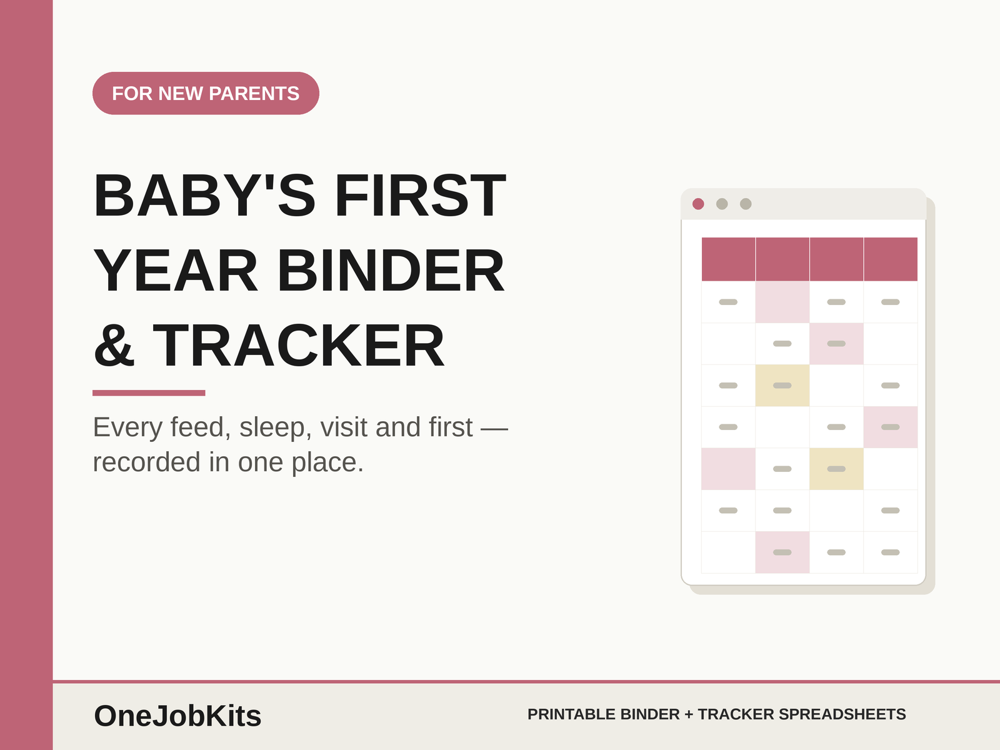

OneJobKits · Kit #24
Baby's First Year Binder & Tracker — baby log book printable

If you searched for a baby log book printable, you are probably keeping a first year in your head right now: feeds counted on fingers at 3 a.m., sleeps nobody wrote down, an immunisation card that lives in whichever bag went to the clinic, and a first smile that happened on a Tuesday — or was it Thursday?
This page gives you the first piece of the system free, right here: a one-week newborn log you can download, print and start tonight. Below it is the full kit it comes from — a printable binder for the fridge and the change table, plus a spreadsheet tracker that totals itself — built to record your baby: your dates, your entries, your words. It records and organises. It does not advise: there are no schedules, no amounts to aim for and no "should be by now" anywhere in it.
Free download — start with the FREE Newborn Log Starter
The FREE Newborn Log Starter is a 3-page fillable PDF (197 fields): a one-week feeding log, a one-week sleep log with room for notes, and a contacts page for the numbers that matter at 3 a.m. Print it and write by hand, or type into it on a phone, tablet or computer. It is the same record-keeping style as the full system, in a one-week size — recording only, no schedules, no expected amounts, no advice of any kind.
Download the free newborn log starter (PDF)Get it on Gumroad instead
What the starter does not do: it covers one week, on paper only. The full kit below covers the whole first year — the tracker spreadsheet adds up every day for you, the pediatric visit and immunisation pages build the record you will hand to the clinic and the daycare, and the milestones journal keeps the firsts in your own words.
What's inside the full kit
- Baby tracker workbook (Excel + Google Sheets) — 8 tabs, no macros; one linked record system for the whole first year
- Dashboard — your baby's and clinic's detail fields plus 9 automatic totals read from the logs (feeds, days logged, average per feed, sleeps, average sleep duration, visits, immunisation records, milestones, growth entries)
- Feeding Log — room for 200 feeds; each day's total amount and feed count calculate for you
- Sleep Log — room for 200 sleeps; every sleep's duration calculates from the clock times — including the ones that cross midnight — with daily totals
- Pediatric Visits — room for 60 visits: date, provider, reason in your own words, what was recorded, your follow-up notes
- Immunisation Records — room for 60 records of dates GIVEN, copied exactly as your provider wrote them: name, dose number and lot as recorded. Nothing in this kit lists anything as due, expected or recommended, and your provider's record and the official registry always outrank this kit
- Milestones Journal — a 100-row first-person journal of firsts and moments: a story, not a scorecard — no age norms anywhere
- Growth Log — room for 60 entries; the weight change since the previous entry calculates. No charts, no percentiles, no targets
- Worked example file — the whole tracker filled in with one fictional baby (Noah, born 14 Mar 2026 — marked EXAMPLE on every tab)
- Printable Baby Binder (PDF, fillable) — 14 pages and 878 fields: cover & baby details, emergency contacts & caregiver handover, three weekly feeding logs, three weekly sleep logs, pediatric visit records, immunisation records, two milestones journal pages, the childcare documents checklist, and notes with the year at a glance
- Setup guide (PDF) — 4 dense pages: the record-keeping-only rules, the 20-minute setup, the tabs one by one, the Noah example tour, the binder page by page, the Bundle explained, and the year's rhythm
- Bundle ($39) adds: the Daycare & Sitter Handover workbook pair (Excel + Google Sheets) with its own filled example — Baby & Contacts (18 fields, allergies exactly as you state them), a daily Handover Sheet with calculated sleep durations and a supplies checklist, an Authorised Pickup List (20 rows), a Daily Report Log (100 care days; feeds, nappies and average naps calculate) and the 13-document Childcare Documents Checklist with a live done-count
A filled example — so you can see the finished thing
The full kit ships with the tracker already filled in for one fictional baby — Noah, born 14 March 2026 — so you can see exactly what the finished record looks like before you type a real name. Every tab and page of the example is marked EXAMPLE. Here is what his dashboard reads from the logs underneath it:
| Read from the logs | Noah's example |
|---|---|
| Feeds logged | 21 feeds over 4 logged days |
| Sleeps logged | 14 sleeps, each duration calculated from the clock times — including the ones that cross midnight |
| Pediatric visits | 5 visits, with the reason and follow-up notes in the parents' own words |
| Immunisation records | 12 records — dates given, copied exactly as the provider wrote them |
| Milestones journalled | 10 firsts and moments, written as a story |
| Growth entries | 8 entries, each showing the change since the previous weigh-in |
That is the shape of the whole system: you write the fragments down once, in the moment, and the workbook keeps the totals — so six months later the answer to "when did that start?" is on a page, not in an argument.
Who it is for
New and expecting parents who want the first year's records in one findable place; grandparents buying the useful gift instead of a fifth blanket; and families starting daycare who need the handover paperwork done before the first morning.
Who it is not for
Anyone looking for medical advice, feeding or sleep schedules, amounts to aim for, developmental guidance or immunisation recommendations. There is none in here — on purpose. For all health questions, ask your baby's own clinician; in an emergency, call your local emergency number first.
Questions buyers ask
- How do you keep track of feeds and sleeps without another app subscription?
- On paper and in a spreadsheet you own. The free starter on this page is a one-week printable feeding and sleep log. The full kit adds the tracker workbook, which totals each day automatically — feed counts, daily amounts, sleep durations — so the record builds itself as you write the fragments down.
- What should I write down at each pediatric visit?
- The date, the provider, the reason in your own words, what was recorded at the visit, and your follow-up notes. The kit's Pediatric Visits tab has room for 60 visits in exactly that shape, and the printable binder carries the same pages for the fridge or the clinic bag.
- Where do I record immunisations — and does this replace the official record?
- No. Nothing replaces your provider's record or the official immunisation registry, and the kit says so on the page itself. Its Immunisation Records tab holds copies of dates GIVEN, written exactly as your provider recorded them — name, dose number and lot — so the details are findable at home when a daycare or a new clinic asks.
- Does the kit tell me how much my baby should eat or sleep?
- No. There are no schedules, no expected amounts, no age norms and no targets anywhere in it — that is a deliberate design rule, not a missing feature. It is a record of your baby, not a scorecard for your baby.
- What does the free starter cover, and what does the full kit add?
- The starter covers one week: a feeding log, a sleep log with notes, and a contacts page. The full kit covers the whole first year: the self-totalling tracker, visit and immunisation records, milestones journal, growth log, the 14-page printable binder, and — in the Bundle — the daycare and sitter handover workbook pair.
- Do I need Excel, or does it work in Google Sheets?
- Both formats are included for every workbook, and there are no macros, so it runs the same in Microsoft Excel and in Google Sheets. The binder and logs are fillable PDFs you can also print and write on by hand.
Prices
Standard: $29 · Bundle: $39 — one-time payment, digital download. No subscription; the files are yours.
Can't find the kit you need?
We build it. Ask us — first asker gets it at half the shelf price. Tell us the job at onejobkits.com and we will build the kit for it.
Related kits
Please know: this is a records and organisation tool only — not medical advice, not a diagnosis tool, and no substitute for your provider's records or the official immunisation registry, which outrank this kit. All example data is fictional (Baby Noah, his parents and clinic are invented, and every tab and page says EXAMPLE).